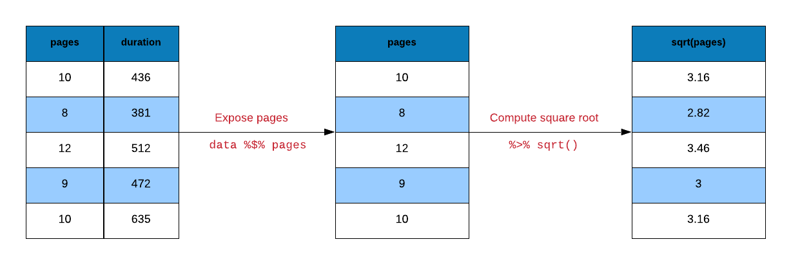

Chapter 6 Pipes
6.1 Introduction
R code contain a lot of parentheses in case of a sequence of multiple operations. When you are dealing with complex code, it results in nested function calls which are hard to read and maintain. The magrittr package by Stefan Milton Bache provides pipes enabling us to write R code that is readable.
Pipes allow us to clearly express a sequence of multiple operations by:
- structuring operations from left to right
- avoiding
- nested function calls
- intermediate steps
- overwriting of original data
- minimizing creation of local variables
6.2 Pipes
If you are using tidyverse, magrittr will be automatically loaded. We will look at 3 different types of pipes:
%>%: pipe a value forward into an expression or function call%<>%: result assigned to left hand side object instead of returning it%$%: expose names within left hand side objects to right hand side expressions
We will use the following R packages:
6.3 Data
ecom <-
read_csv('https://raw.githubusercontent.com/rsquaredacademy/datasets/master/web.csv',
col_types = cols_only(
referrer = col_factor(levels = c("bing", "direct", "social", "yahoo", "google")),
n_pages = col_double(), duration = col_double(), purchase = col_logical()
)
)
ecom## # A tibble: 1,000 x 4
## referrer n_pages duration purchase
## <fct> <dbl> <dbl> <lgl>
## 1 google 1 693 FALSE
## 2 yahoo 1 459 FALSE
## 3 direct 1 996 FALSE
## 4 bing 18 468 TRUE
## 5 yahoo 1 955 FALSE
## 6 yahoo 5 135 FALSE
## 7 yahoo 1 75 FALSE
## 8 direct 1 908 FALSE
## 9 bing 19 209 FALSE
## 10 google 1 208 FALSE
## # ... with 990 more rowsWe will create a smaller data set from the above data to be used in some examples:
## # A tibble: 10 x 4
## referrer n_pages duration purchase
## <fct> <dbl> <dbl> <lgl>
## 1 bing 20 380 FALSE
## 2 yahoo 1 541 FALSE
## 3 google 2 60 FALSE
## 4 google 1 414 FALSE
## 5 bing 1 845 FALSE
## 6 social 10 150 FALSE
## 7 social 1 449 FALSE
## 8 bing 12 144 FALSE
## 9 yahoo 7 105 FALSE
## 10 google 12 324 TRUE6.3.1 Data Dictionary
- referrer: referrer website/search engine
- n_pages: number of pages visited
- duration: time spent on the website (in seconds)
- purchase: whether visitor purchased
6.4 head()
Let us start with a simple example. You must be aware of head(). If not,
do not worry. It returns the first few observations/rows of data. We can
specify the number of observations it should return as well. Let us use
it to view the first 10 rows of our data set.
## # A tibble: 10 x 4
## referrer n_pages duration purchase
## <fct> <dbl> <dbl> <lgl>
## 1 google 1 693 FALSE
## 2 yahoo 1 459 FALSE
## 3 direct 1 996 FALSE
## 4 bing 18 468 TRUE
## 5 yahoo 1 955 FALSE
## 6 yahoo 5 135 FALSE
## 7 yahoo 1 75 FALSE
## 8 direct 1 908 FALSE
## 9 bing 19 209 FALSE
## 10 google 1 208 FALSE6.4.1 Using Pipe
Now let us do the same but with %>%.
## # A tibble: 10 x 4
## referrer n_pages duration purchase
## <fct> <dbl> <dbl> <lgl>
## 1 google 1 693 FALSE
## 2 yahoo 1 459 FALSE
## 3 direct 1 996 FALSE
## 4 bing 18 468 TRUE
## 5 yahoo 1 955 FALSE
## 6 yahoo 5 135 FALSE
## 7 yahoo 1 75 FALSE
## 8 direct 1 908 FALSE
## 9 bing 19 209 FALSE
## 10 google 1 208 FALSE6.5 Square Root
Time to try a slightly more challenging example. We want the square root of
n_pages column from the data set.
Let us break down the above computation into small steps:
- select/expose the
n_pagescolumn fromecomdata - compute the square root
- assign the first few observations to
y

Let us reproduce y using pipes.
# select n_pages variable and assign it to y
y <-
ecom_mini %$%
n_pages
# compute square root of y and assign it to y
y %<>% sqrtAnother way to compute the square root of y is shown below.
6.6 Visualization
Let us look at a data visualization example. We will create a bar plot to visualize the frequency of different referrer types that drove purchasers to the website. Let us look at the steps involved in creating the bar plot:
- extract rows where purchase is TRUE
- select/expose
referrercolumn - tabulate referrer data using
table() - use the tabulated data to create bar plot using
barplot()


6.7 Correlation
Correlation is a statistical measure that indicates the extent to which two or more variables
fluctuate together. In R, correlation is computed using cor(). Let us look at the
correlation between the number of pages browsed and time spent on the site for
visitors who purchased some product. Below are the steps for computing correlation:
- extract rows where purchase is TRUE
- select/expose
n_pagesanddurationcolumns - use
cor()to compute the correlation

## [1] 0.4290905## [1] 0.4290905## [1] 0.42909056.8 Regression
Let us look at a regression example. We regress time spent on the site on number of pages visited. Below are the steps involved in running the regression:
- use
durationandn_pagescolumns from ecom data - pass the above data to
lm() - pass the output from
lm()tosummary()
##
## Call:
## lm(formula = duration ~ n_pages, data = ecom)
##
## Residuals:
## Min 1Q Median 3Q Max
## -386.45 -213.03 -38.93 179.31 602.55
##
## Coefficients:
## Estimate Std. Error t value Pr(>|t|)
## (Intercept) 404.803 11.323 35.750 < 2e-16 ***
## n_pages -8.355 1.296 -6.449 1.76e-10 ***
## ---
## Signif. codes: 0 '***' 0.001 '**' 0.01 '*' 0.05 '.' 0.1 ' ' 1
##
## Residual standard error: 263.3 on 998 degrees of freedom
## Multiple R-squared: 0.04, Adjusted R-squared: 0.03904
## F-statistic: 41.58 on 1 and 998 DF, p-value: 1.756e-106.8.1 Using pipe
##
## Call:
## lm(formula = duration ~ n_pages)
##
## Residuals:
## Min 1Q Median 3Q Max
## -386.45 -213.03 -38.93 179.31 602.55
##
## Coefficients:
## Estimate Std. Error t value Pr(>|t|)
## (Intercept) 404.803 11.323 35.750 < 2e-16 ***
## n_pages -8.355 1.296 -6.449 1.76e-10 ***
## ---
## Signif. codes: 0 '***' 0.001 '**' 0.01 '*' 0.05 '.' 0.1 ' ' 1
##
## Residual standard error: 263.3 on 998 degrees of freedom
## Multiple R-squared: 0.04, Adjusted R-squared: 0.03904
## F-statistic: 41.58 on 1 and 998 DF, p-value: 1.756e-106.9 String Manipulation
We want to extract the first name (jovial) from the below email id and convert it to upper case. Below are the steps to achieve this:
- split the email id using the pattern
@usingstr_split() - extract the first element from the resulting list using
extract2() - extract the first element from the character vector using
extract() - extract the first six characters using
str_sub() - convert to upper case using
str_to_upper()
email <- 'jovialcann@anymail.com'
# without pipe
str_to_upper(str_sub(str_split(email, '@')[[1]][1], start = 1, end = 6))## [1] "JOVIAL"# with pipe
email %>%
str_split(pattern = '@') %>%
extract2(1) %>%
extract(1) %>%
str_sub(start = 1, end = 6) %>%
str_to_upper()## [1] "JOVIAL"Another method that uses map_chr() from the purrr package.
email %>%
str_split(pattern = '@') %>%
map_chr(1) %>%
str_sub(start = 1, end = 6) %>%
str_to_upper()## [1] "JOVIAL"6.10 Data Extraction
Let us turn our attention towards data extraction. magrittr provides
alternatives to $, [ and [[.
extract()extract2()use_series()
6.10.1 Extract Column
To extract a specific column using the column name, we mention the name
of the column in single/double quotes within [ or [[. In case of $,
we do not use quotes.
## # A tibble: 10 x 1
## n_pages
## <dbl>
## 1 20
## 2 1
## 3 2
## 4 1
## 5 1
## 6 10
## 7 1
## 8 12
## 9 7
## 10 12## # A tibble: 10 x 1
## n_pages
## <dbl>
## 1 20
## 2 1
## 3 2
## 4 1
## 5 1
## 6 10
## 7 1
## 8 12
## 9 7
## 10 12We can extract columns using their index position. Keep in mind that index
position starts from 1 in R. In the below example, we show how to
extract n_pages column but instead of using the column name, we use the
column position.
## # A tibble: 10 x 1
## n_pages
## <dbl>
## 1 20
## 2 1
## 3 2
## 4 1
## 5 1
## 6 10
## 7 1
## 8 12
## 9 7
## 10 12## # A tibble: 10 x 1
## n_pages
## <dbl>
## 1 20
## 2 1
## 3 2
## 4 1
## 5 1
## 6 10
## 7 1
## 8 12
## 9 7
## 10 12One important differentiator between [ and [[ is that [[ will
return a atomic vector and not a data.frame. $ will also return
a atomic vector. In magrittr, we can use use_series() in place of
$.
## [1] 20 1 2 1 1 10 1 12 7 12## [1] 20 1 2 1 1 10 1 12 7 126.10.2 Extract List Element
Let us convert ecom_mini into a list using as.list() as shown below:
To extract elements of a list, we can use extract2(). It is an
alternative for [[.
## [1] 20 1 2 1 1 10 1 12 7 12## [1] 20 1 2 1 1 10 1 12 7 12## [1] bing yahoo google google bing social social bing yahoo google
## Levels: bing direct social yahoo google## [1] bing yahoo google google bing social social bing yahoo google
## Levels: bing direct social yahoo googleWe can extract the elements of a list using use_series() as well.
## [1] 20 1 2 1 1 10 1 12 7 12## [1] 20 1 2 1 1 10 1 12 7 126.11 Arithmetic Operations
magrittr offer alternatives for arithemtic operations as well. We will look at a few examples below.
add()subtract()multiply_by()multiply_by_matrix()divide_by()divide_by_int()mod()raise_to_power()
6.11.1 Addition
## [1] 2 3 4 5 6 7 8 9 10 11## [1] 2 3 4 5 6 7 8 9 10 11## [1] 2 3 4 5 6 7 8 9 10 116.11.2 Multiplication
## [1] 3 6 9 12 15 18 21 24 27 30## [1] 3 6 9 12 15 18 21 24 27 30## [1] 3 6 9 12 15 18 21 24 27 306.11.3 Division
## [1] 0.5 1.0 1.5 2.0 2.5 3.0 3.5 4.0 4.5 5.0## [1] 0.5 1.0 1.5 2.0 2.5 3.0 3.5 4.0 4.5 5.0## [1] 0.5 1.0 1.5 2.0 2.5 3.0 3.5 4.0 4.5 5.06.11.4 Power
## [1] 1 2 3 4 5 6 7 8 9 10 11 12 13 14 15 16 17
## [18] 18 19 20 21 22 23 24 25 26 27 28 29 30 31 32 33 34
## [35] 35 36 37 38 39 40 41 42 43 44 45 46 47 48 49 50 51
## [52] 52 53 54 55 56 57 58 59 60 61 62 63 64 65 66 67 68
## [69] 69 70 71 72 73 74 75 76 77 78 79 80 81 82 83 84 85
## [86] 86 87 88 89 90 91 92 93 94 95 96 97 98 99 100## [1] 1 4 9 16 25 36 49 64 81 100## [1] 1 4 9 16 25 36 49 64 81 1006.12 Logical Operators
There are alternatives for logical operators as well. We will look at a few examples below.
and()or()equals()not()is_greater_than()is_weakly_greater_than()is_less_than()is_weakly_less_than()
6.12.1 Greater Than
## [1] FALSE FALSE FALSE FALSE FALSE TRUE TRUE TRUE TRUE TRUE## [1] FALSE FALSE FALSE FALSE FALSE TRUE TRUE TRUE TRUE TRUE## [1] FALSE FALSE FALSE FALSE FALSE TRUE TRUE TRUE TRUE TRUE6.12.2 Weakly Greater Than
## [1] FALSE FALSE FALSE FALSE TRUE TRUE TRUE TRUE TRUE TRUE## [1] FALSE FALSE FALSE FALSE TRUE TRUE TRUE TRUE TRUE TRUE## [1] FALSE FALSE FALSE FALSE TRUE TRUE TRUE TRUE TRUE TRUE